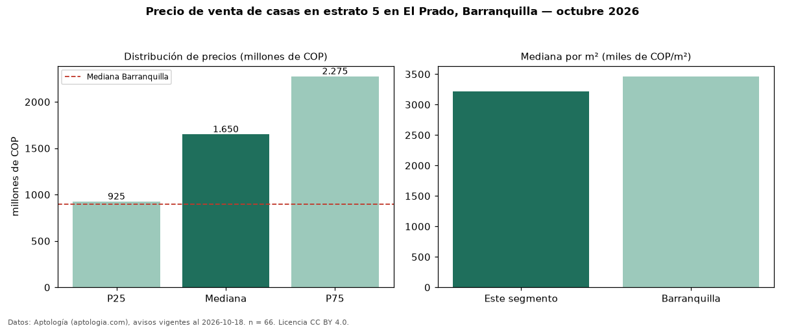

Precio de venta de casas en estrato 5 en El Prado, Barranquilla — octubre 2026
Con 66 avisos vigentes, el precio mediano de casas en estrato 5 en venta en El Prado, Barranquilla es COP 1,65 mil millones. Eso es 120 % más que la mediana de toda la vivienda de estrato 5 de El Prado (COP 750 millones, n = 133); este segmento reúne el 50 % de esos avisos. Por metro cuadrado, la mediana es COP 3,22 millones/m² (n = 64), 2 % por debajo del conjunto de referencia (COP 3,27 millones/m²). El área mediana anunciada es 439 m². La mitad central de los avisos va de COP 925 millones a COP 2,27 mil millones (razón 2,5), una dispersión alta. El segmento con más oferta es el de 3 o más habitaciones (58 avisos, mediana COP 1,62 mil millones). La mediana de todas las casas en venta de Barranquilla es COP 900 millones (+83 % de diferencia). 95 % de los avisos con el dato declara parqueadero. Datos: Aptología (aptologia.com), CC BY 4.0 — https://www.aptologia.com/casas-en-venta/barranquilla/el-prado. Archivos: PDF, CSV con las cifras y gráfica PNG.

| Avisos únicos | 66 |
|---|---|
| Percentil 25 | COP 925.000.000 |
| Mediana | COP 1.650.000.000 |
| Percentil 75 | COP 2.275.000.000 |
| Mediana por m² | COP 3.215.384 |
Fuente: avisos vigentes de portales inmobiliarios recopilados por Aptología, deduplicados (mínimo 30 avisos únicos por celda). Precios pedidos, no cerrados. Fecha: 2026-10-18.